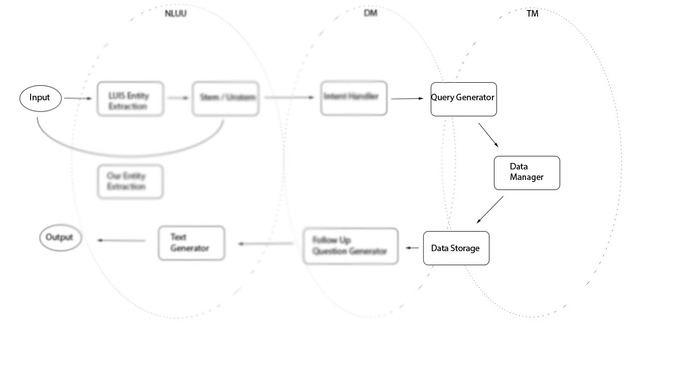

Task Manager
Consistency, Accessibility, Partition Tollerance: choose none
Other parts of the project
Intelligent database access
The task manager acts as an intelligent connection to the database that organizes particular results it returns before sending them back to the Dialogue Manager. It has access to the PostgreSQL server that houses information on courses, professors and a calculated keyword occurrence matrix. The Task Manager uses a wide range of query functions to construct a SQL query, executes that query, and then, depending on the type of request from the Dialogue Manager, decides what courses need to returned first.
The functions that rely on this organization are functions like query_by_keywords and query_by_distribution, where the order of the returned courses has the ability to define what courses the user will look at in a possibly enormous selection of results. The construction of these course objects happens in a helper function called fill_out_courses, which uses the returned SQL query results, and simply fills out the corresponding information in the course object. The actual organization of these courses relies on another helper function called calculate_course_relevance, which assigns a score to the weighted_sum attribute based on the diversity of keywords that occur in the title and description, the total count of keywords that occur, the department the course exists in, and the other interests that the student has previously mentioned, passed to us as student_interests. Query_by_distribution doesn’t have a list of keywords as input, so instead, the Dialogue Manager passes previous interests, and those are used as keywords to adjust the order of the courses returned.
The weights accompanied to these measures of relevance is arbitrary, chosen by the comps group on the basis that it was an approximate way of representing which courses were more important to students. Weighing options differently could affect what kind of courses appear first in the list of returned courses. Adjusting the weights assigned is as easy as changing the contents of weights, a list of the weights to be assigned in calculate_course_relevance.
The task manager is also responsible for correctly assigning what majors and concentrations students are using based on dictionaries called major_dict and concentration_dict. Functions like major_match and concentration_match use edit distance to determine what major or concentration the student was discussing. The long form is returned for printing purposes (as opposed to the short form four letter code, e.g. ECON).
Occurence Matrix
The occurrence matrix consists of the series of words in the course descriptions and titles organized in rows, aligned with the occurrence of that particular word in the department that is represented by the column. This is referred to as a text-document matrix in Jurafsky and Martin’s Speech and Language Processing.
In this particular case, we used departments as documents because the individual courses do not contain enough words for the occurrence matrix to be of any use. Jurafsky and Martin recommend 10,000 words per document, hence using the entire department, which should provide enough words to appropriately match the needs of the text-document literature.
Faster Database Access
Database queries for these functions can be extremely slow without some back end reorganization. Creating indexes on the titles of courses, as well as the class department so as to make the queries much faster. To optimize the time on the database, separating the distributions into several different tables is necessary